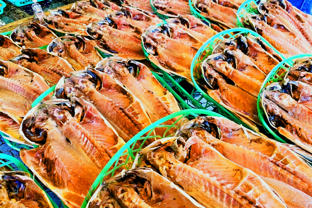
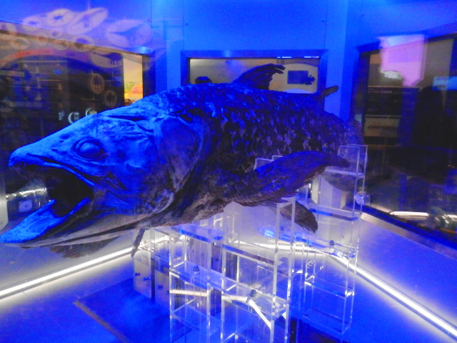

沼津市とは？
沼津市は静岡県の東部に位置しており(右上地図のオレンジの部分)、日本一深い湾(水深2,500m)の駿河湾と日本一高い山(標高3,776m)の富士山のどちらも楽しめる街です。
東京からは新幹線を使って1時間ほど、車でも高速を使って1時間半ほどで着くので観光もしやすいです。
名産品は、海産物とみかん・お茶です。
いいところ3選
絶景からグルメまで楽しめます！
※各写真をクリックすると拡大されます。
01
VIEW
-
海水浴場
I.Cより国道経由で90分
富士山がとてもキレイに見えます！
-
スキューバーダイビング
ダイビングも沼津で楽しめます！
キレイな海とサカナたちが待ってます
-
みかん
みかんも有名！
みかんを使ったお菓子も売られてます
02
LOCAL FOOD
-

海鮮丼
近海でとれたものが乗った3色丼！
港で食べることができます
-

干物
沼津は干物も有名！
アジや金目鯛などあります
-
お茶
沼津のお茶を使ったかき氷！
沼津駅北口から徒歩3分
03
SPOT
-

水族館
市内には3か所の水族館がある
写真の水族館は港にある
-
記念公園
沼津港近くにあります
歴史を感じられる場所です
-
神社
離島にある神社
山道を登っていくのでちょっと大変？
あるアニメの聖地!?
実は、ここが舞台のアニメがあるのを知っていますか？
そのアニメには、市内のいろんな場所が描かれています。
上記にあげた場所もアニメに出てきているかも!?
アニメの聖地巡礼としても、観光地としても楽しめるのが、沼津のいいところです!
建物だけではなく市内を観光していると、キャラクターが描かれたラッピングバスやタクシーに出会ったり、街中のマンホールに描かれてたりしています。
アニメファンの方はぜひ、細かいところまで見てみてください!